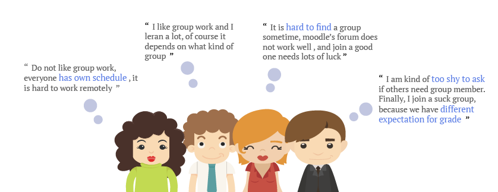
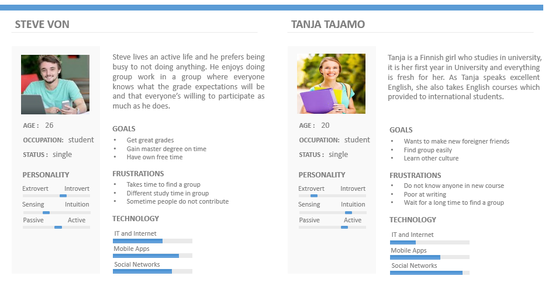
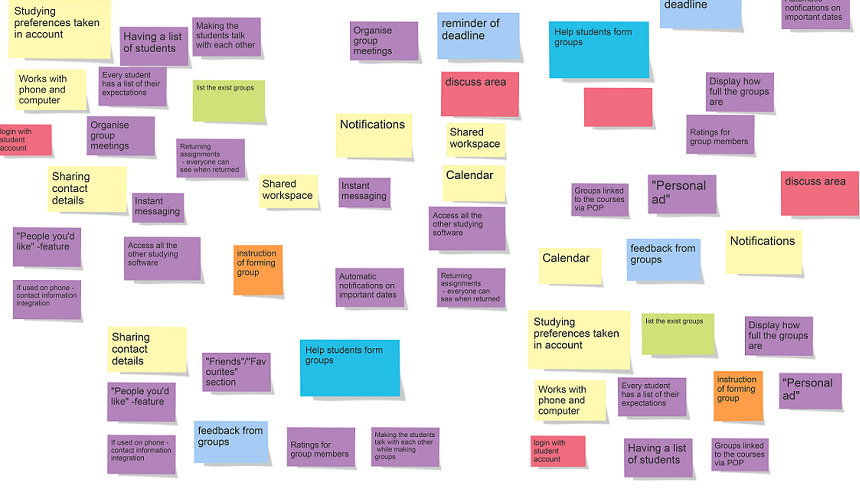
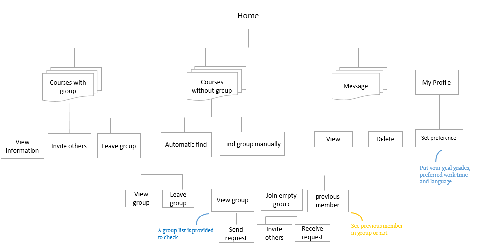
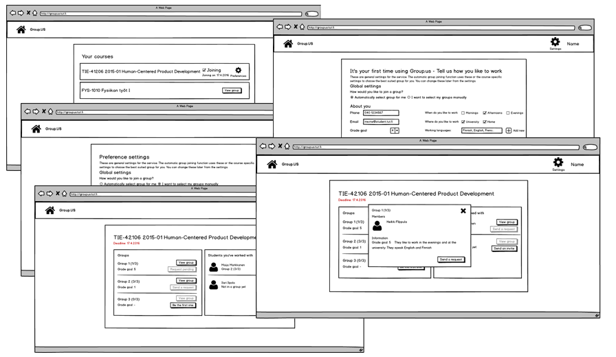
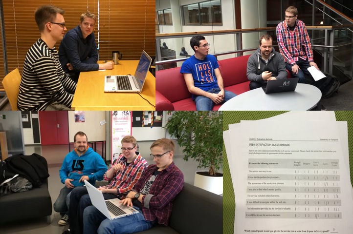

Group.us
Role: User researcher, UX DesignerWhen: 01.2016 to 04.2016
During my course “Human-Centered Product Development” at the Tampere University of Technology, my team worked together for Group.us, a system made to help student find group for assignment in their courses. Through the application, students can check all courses which needed to perform group and find group online easily, most important, they can choose to join one which is best for them. Our work is to gain user insights, and give a solution in a user-centered design process.
Voice from students
Nowadays, students use Moodle forum or talk during course to perform group for assignment, in this way, it takes time and ineffective sometimes. To get deeper understanding, we used interview and online survey to gain more insights from students.

Persona
Based on research, we built personas to understand user better, and kept them in mind during the whole process of design.

Brainstorming
We used brainstorming inside of the group to produce more ideas and insights, also we had it by an online tool for brainstorming.

Model
The overall functionality model can be seen below.

Wireframe
We used Balsamiq to make low fidelity mockups, as it is an effective way to make prototypes and conduct usability testing and heuristic evaluation on it.

Evaluation
Lastly we invited the students in university to participate in evaluation testing. We prepared the porotypes and questionnaire. Majority testers came up with new functionalities they wanted, however, we designed in iterative way with selecting feedback carefully to avoid “scope creep”. After redesign, we got better evaluation which revealed from the customer satisfied, and questionnaire.
